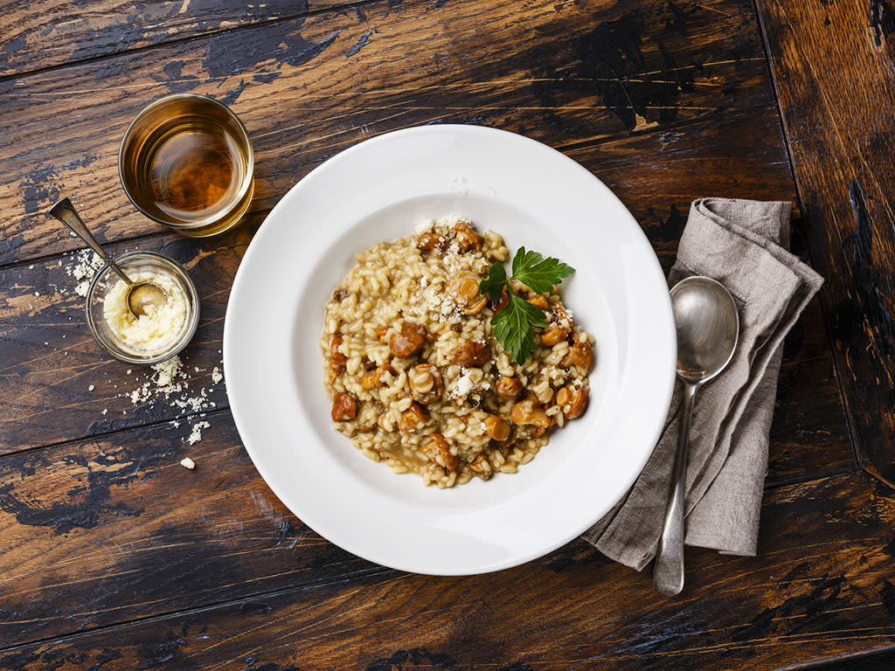

Rice was introduced to Sicily and Spain in the 14th century by the Arabs. Rice cultivation continued in Naples and eventually extended to northern Italy via the marshes of the Po river valley. The Mediterranean climate with high humidity was conducive to growing short- and medium-grained rice. The city-states and elites of Milan, Venice, and Genoa were buoyed with profits from this new commodity. Combined with the influx of spices from the East, it accelerated risotto's popularity throughout the region. Milan was ruled by Spain, and it is in that era Spanish saffron accounts for another famous rice preparation — paella. That is another story, however. Legend has it that a church-sponsored stained-glass colorist was pranked by an assistant in September 1574 when he added a pinch of saffron to his maestros risotto and the defining recipe Risotto alla Milanese was born. Up until the 18th century risotto included boiled rice as an ingredient. The recipe version that most resembles what we eat in the 21st century was first published in 1829. It included roasting the rice with butter and onion, then adding broth little-by-little while stirring continuously until it was creamy and rich.
